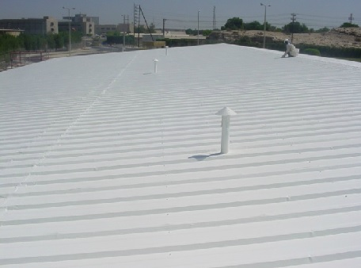
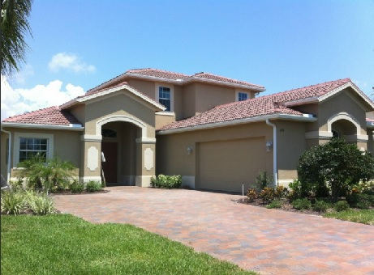
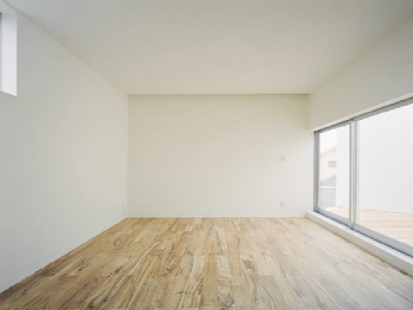
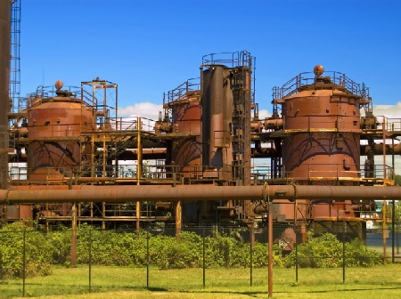
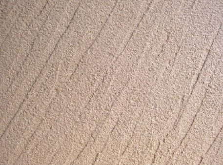
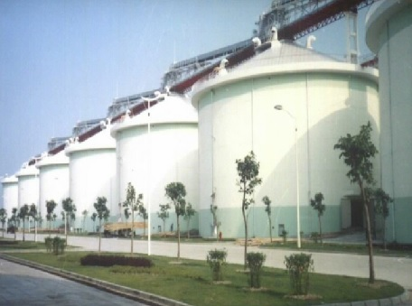
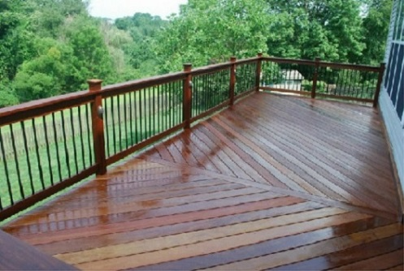
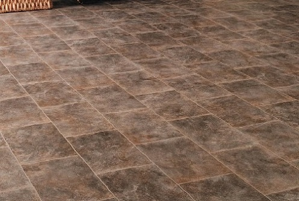
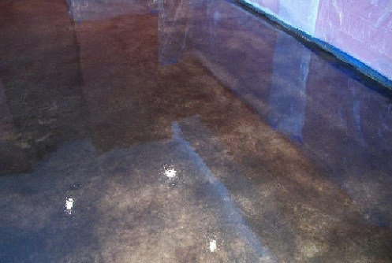
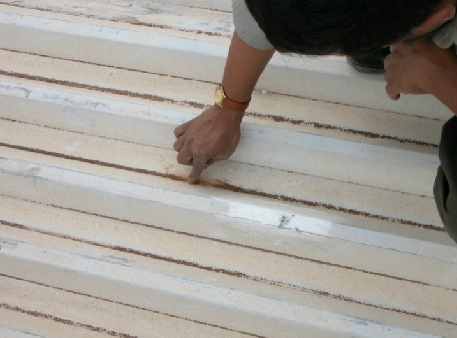

Climate-Shield® Ürünleri
Ürünlere Genel Bakış
Çatı Kaplama

Climate-Shield® Roof Coats (Çatı mantoları) çapları 100 mikrondan küçük olan, havası boşaltılmış sodyum borisilikat (Isı şokuna dayanıklı cam) ve seramik mikro küreciklerle doldurulmuş ola, saf su bazlı reçineden yapılan yüksek verimli, güç tasarrufu sağlayan, esnek mantolardır. Her mikro kürecikler, yalıtılmış bir hücre gibi, uygulama yapılan yüzeyi bütünüyle örter, ısı koruma bakımından etkin bir battaniye gibi davranır. Zehirsizdir, çevre dostudur ve kılcal çatlakları kapatan yekpare bir kaplama sağlar.
Dış Cephe Kaplama
Dış Cephe Kaplama

Climate-Shield® Exterior Wall (Dış Duvar) yüksek verimli, güç tasarrufu sağlayan, dış duvarlar için ısı yalıtımı ve su geçirmezlik özelliği sağlamak amacıyla tasarlanmış olan esnek bir mantolama ürünümüzdür. Zehirsiz, çevre dostu, kılcal çatlakları kapatan yekpare bir kaplamadır. Bütünüyle yıkanabilir bir üründür. Bu su bazlı mantolar, ısı koruma bakımından son derece verimli olan, içi boşaltılmış borisilikat (Isı değişimlerine karşı çok dayanıklı cam) ve seramik mikro küreciklerle doldurulmuş reçine sisteminden oluşmaktadır.
İç Cephe Kaplama
İç Cephe Kaplama

Climate-Shield® Interior Wall Coats (İç duvar mantoları), duvarlarınızda ısı yalıtımı ve su geçirmezlik sağlamak üzere tasarlanmış, yüksek verimli, enerji tasarrufu sağlayan, esnek mantolardır. Zehirsizdir, çevre dostudur ve kılcal çatlakları kapatan yekpare bir kaplama sağlar. Bütünüyle yıkanabilir, kirlenmeye ve yıkıcı kimyasallara karşı dirençlidir. Bu su bazlı mantolar, ısı koruma bakımından çok verimli olan, havası boşaltılmış (İçi boşaltılmış) mikro seramik küreciklerle doldurulmuş olan akrilik reçine sisteminden yapılmaktadır.
Metal Astarı

Climate-Shield® Metal Astarı pas engelleyici, su bazlı, yüksek kaliteli,% 100 akrilik reçine, korozyona dayanıklı bir kaplama ürünüdür.Otomobillerde, ticari araçlarda, deniz ve sanayi boru hatlarında ve depolama tanklarında kullanılır. Ayrıca tüm paslanmış metallerde kullanımı yaygındır.Climate-Shield® Roof Coat (Çatı Kaplama) ya da Tank Shield (Tank Kalkanı)'ı uygulamalarından önce kullanılmaktadır.
Sıva Kalkanı

Climate-Shield® Stucco Shield, geleneksel üç ya da daha çok parçalı sıva sistemlerine karşı seçenek olarak, boya yerine kullanılabilen, su bazlı koruyucu bir mantodur. Bu benzersiz mantolama ürünü, kolay uygulanabilir, daha az işçilik gerektirir, kalıcı ve etkili bir ısı engeli sağlar. Astar ve sonlandırma katları, içi boşluklu (havası alınmış) borosilikat mikro seramik kürecikler içerir. Bu mikro kürecikler ısıyı yansıtarak, kırarak ve ısıyı dağıtarak, sıcağı uygulanan yüzeyden uzak tutarlar.
Tank Kalkanı

Climate-Shield® Tank Shield, saklama depolarını korumak ve yüzey sıcaklıklarını düşürmek amacıyla tasarlanan yüksek verimli ve esnek manto ürünümüzdür. Zehirsizdir ve çevre dostudur, bütünüyle yıkanabilir bir üründür. Yıkıcı kimyasallara ve kir tutmaya karşı dirençlidir. Bu su bazlı manto, ısı koruma bakımından oldukça verimlidir. İçi boşaltımlı, thermo-mikro seramik küreciklerle doldurulmuş olan akrilik reçine siteminden oluşmaktadır. Climate-Shield® Tank Shield'in üstün bir yangın dayanımı vardır (UL standartlarına göre A sınıfıdır).
Ağaç ve Güverte Kaplama

Climate-Shield® Wood & Deck Coat ürünü UV (Ultra viyola - mor ötesi ışıma) ve nem direnci bakımından sınanmıştır. (ASTM standartlarına göre test edilmiştir). Bu su esaslı kapatıcı astar, geleneksel astarlardan daha üstün ve uzun ömürlü olabilmesi amacıyla en iyi reçineleri içerir. Yağmur ve güneş, korumasız dış ahşap yüzeylere onarımı masraflı zararlar verebilir. Climate-Shield® Wood & Deck Coat 4 YÖNLÜ BİR YARAR SUNAR, UV (Ultra viyola, Morötesi) ışımayı önler.
Akrilik Flex Tac

Climate-Shield® Akrilik Flex-Tac önceki Termo-kalkan ya da dış Çatı kat uygulama için zift yüzeyler üzerinde kullanılmak üzere bir primeridir.Climate-Shield® harici Acrylic Flex Tac, Climate-Shield® Roof/Wall (Çatı/Duvar) uygulamalarında, tutunmayı artırmak amacıyla katran (Zift, bitumen) yüzeyler üzerine uygulanan yapışkan bir mantolama ürünüdür.
Clear Kaplama

Climate-Shield® Clear Coat çeşitli alt katmanları ya da yüzeyleri kaplamak, kapatmak, saklamak, korumak ve canlandırmak için tasarlanmış dayanıklı akrilik bir mantodur. Mikroskobik nüfuz yeteneği ve akmaya karşı dirençli (Düşük Viskoziteli) oluşunun sonucu olarak Climate-Shield® Clear Coat uygulandığı yüzeye iyice işleyip kilitlenerek su itici bir engel tabakası oluşturur. Ayrıca küf, küflenme, güverçile ve mantar büyümesine karşı çeşitli kimyasal maddelerde içerir.
Pas Dönüştürücü

Climate-Shield® Rust Converter var olan küflenmeyi durdurur, gelecekteki çürümeyi önler. Bu ürün, olabilecek her hangi bir sızıntıyı önler, kalıcı ve koruyucu bir engel oluşturur. Zımparalama, kazıma ya da fırçalamaya gerek yoktur. Climate-Shield® Rust Converter yüksek nitelikli, su bazlı, eşsiz bir küf denetim ürünüdür.